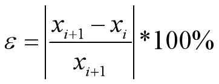
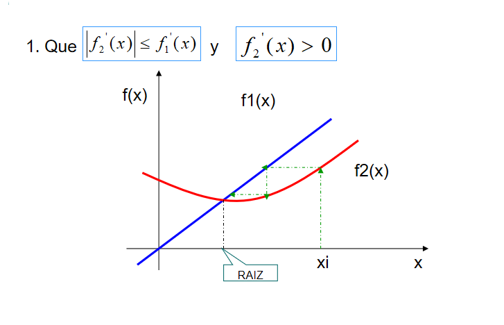
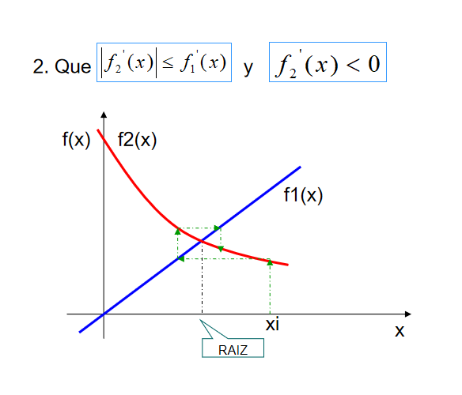
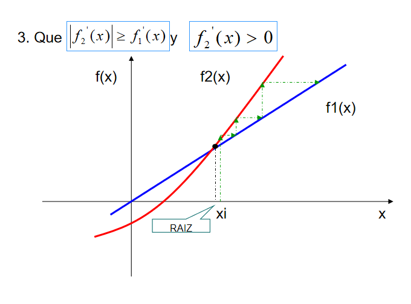
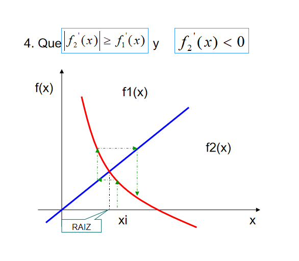

- Este método se basa en hacer que la raíz se convierta en un punto fijo e iterando hasta que se alcance dicha raíz
- Dada una ecuación f(x) = 0, podemos transformarla, de alguna manera, en otra equivalente del tipo x = g(x) para alguna función g.
- En este caso se tiene que:
- α es raíz de f(x)= 0 ⇔
- f(α)= 0 ⇔
- α = g(α) ⇔
- α es raíz de x = g(x)
- El método del punto fijo parte de un valor inicial x0 cercano a la raíz
- Para encontrar la solución, calculamos una nueva aproximación x1=g(x0). Reemplazamos el nuevo valor obtenido y repetimos el proceso
- Como en otras formulas iterativas, el error aproximado se calcula como:

CASO 1
- solución monotónicamente convergente
- mayor acercamiento a la raíz

CASO 2
- solución oscilatoriamente convergente
- mayor acercamiento de manera oscilatoria a la raíz

CASO 3
- solución monotónicamente divergente
- mayor alejamiento de la raíz

CASO 4
- solución oscilatoriamente divergente
- mayor alejamiento de manera oscilatoria de la raíz
